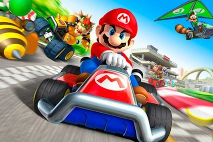
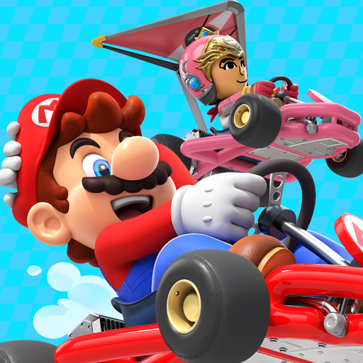
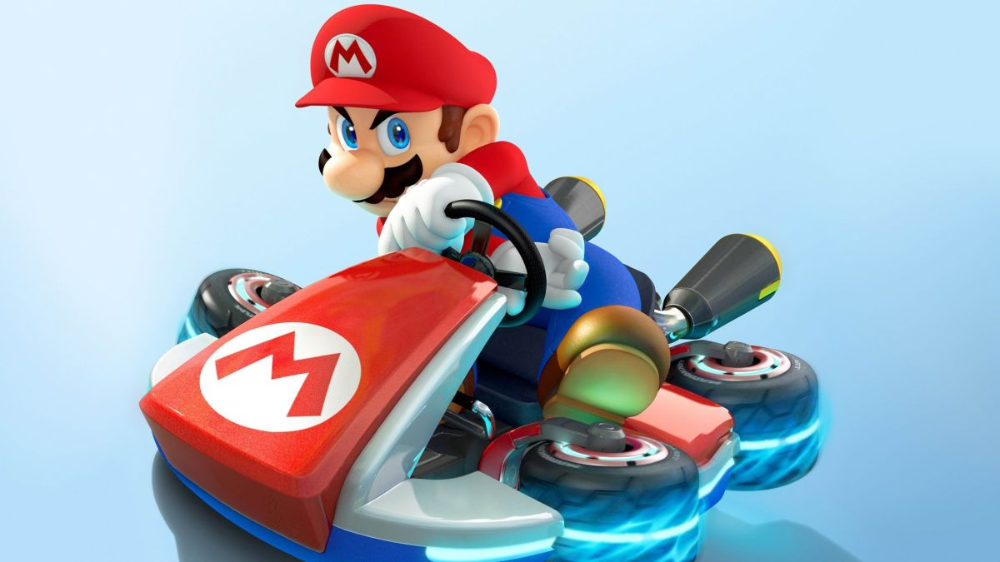
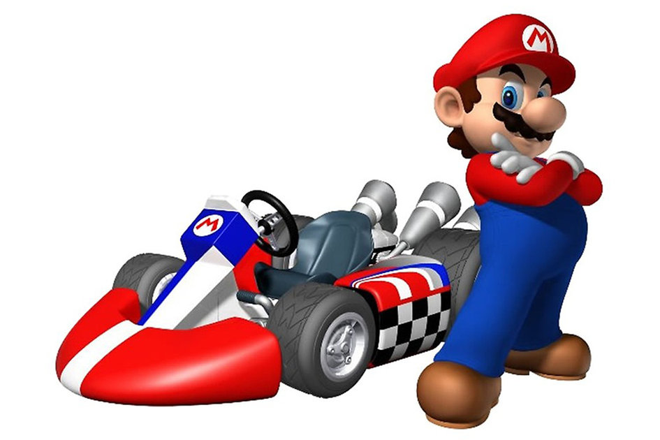

Mario Kart es una serie de videojuegos de carreras desarrollados y distribuidos por Nintendo como spin-offs de su marca registrada Super Mario y cuentan con la aparición de los personajes de la franquicia de Mario. El primer juego de la serie, Super Mario Kart, fue lanzado en 1992 para la consola Super Nintendo y fue un éxito comercial y crítico.